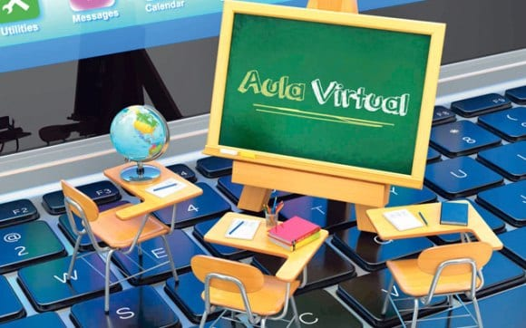
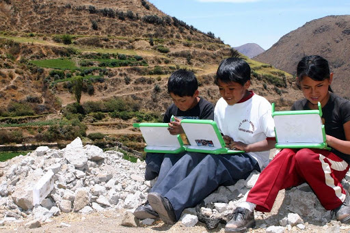

Aula virtual

Este es quizá uno de los cambios más importantes. La internet hizo posible trasladar el aula física, de encuentro de alumnos y profesores, a un entorno virtual, sin límites físicos ni temporales, esto especialmente en las zonas rurales donde la gran mayoría de la población conocía solamente las aulas físicas Consiste en una plataforma o programa informático creado para compartir conocimientos y que cuenta con varios recursos para que los participantes puedan interactuar: preguntar, participar en foros, presentar documentos o videos, realizar evaluaciones, entre otros. Esta herramienta ha sido fundamental en la realidad actual y refleja un antes y después para la educación a nivel mundial. Muchas instituciones, que no contaban antes con este tipo de mecanismos, tuvieron que adaptarse sobre la marcha para continuar con sus pensums educativos.
Acceso a información ilimitada
El acceso inmediato a la información para el proceso educativo también fue un cambio importante. La red, mediante la web y los diferentes avances que ha tenido, posibilitó el acceso a un mundo de información ilimitada, a tan solo un click los alumnos pueden investigar cualquier tema de su interés, sin necesidad de movilizarse, desde cualquier lugar y a cualquier hora. En las zonas alejadas, la mayoría de consultas digitales se las realizaba en cybers, o cafénets. Ahora gracias al internet satelital los niños a pesar de vivir en áreas alejadas pueden conectarse a la red gracias a la tecnología satelital.
Educación en zonas remotas

El internet satelital abrió la posibilidad única de llevar educación a cualquier parte de la tierra, sin importar su ubicación, distancia o lejanía. Es la única tecnología que llega a donde las otras tecnologías no llegan, gracias a la ubicación de los satélites que al estar en el espacio tienen mayor cobertura. Este cambio ha permitido llevar la educación a zonas remotas, sin acceso a escuelas y que muchas veces no cuentan siquiera con acceso a otro tipo de servicios básicos. Este aporte es de extrema importancia, especialmente en esta época de emergencia sanitaria donde muchas comunidades pudieron mantener sus jornadas educativas gracias a este tipo de conectividad.